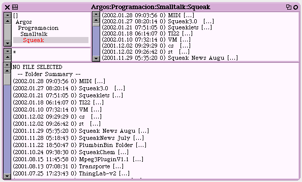
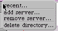
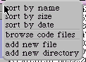

FileList
La herrramienta FileList tiene un funcionamiento muy similar al Explorer de Windows.
El aspecto para Squeak 3.2 es

Los menús conrtextuales de cada panel son
Como el entorno está pensado para Internet, tenemos la opción en el nivel superior de conectarnos a algunos servidores ftp
Menú contextual de la lista de archivos